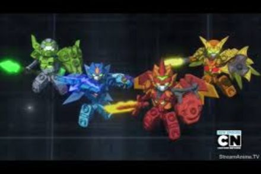
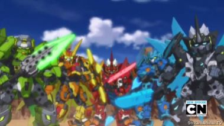
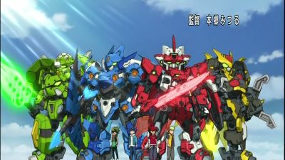

This is core mode, the original version of their armor. They had no elements only the basic
fusions and weapons.
fusions and weapons.
This is the mode when the Tenkai Knights are in between the core mode and the elemental mode. It is called Phoenix mode.
This is when the Tenkai Knights have special elements and abilities. (Dromus has one too, it is whirlwind)

Elemental Titan Mode is a bigger version of elemental. (top)
Titan mode is the bigger version of core (bottom)
Titan mode is the bigger version of core (bottom)
